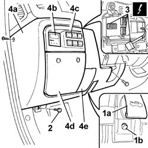

7040A20 LEFT DASHBOARD LOWER TRIM - R.R.
- Path
- Procedures > 70 FITTINGS > 7040 BODY INTERIOR FITTINGS AND TRIM > 7040A PASSENGER COMPARTMENT TRIM > 7040A20 LEFT DASHBOARD LOWER TRIM - R.R.
- Kind
- repair procedure (removal / refitting; the operation number is the code)
- Applies to
- all engines; all production periods
- Interactive page
- https://sloeber94.github.io/elrnDB-fDct/en/#/244001498
Applies to: all engines; all production periods
 Removing
Removing
 Refitting
Refitting- Disconnect the negative battery terminal.
- Raise the steering wheel angle adjustment lever.
1. Raise the bonnet opening lever (1a) and undo the bolt (1b).
2. Undo the fixing bolts.
3. Disconnect the electrical connections.
 | Description | Connector |
|---|---|---|
3 | Additional control panel | H115 |
| Description | Connector |
|---|---|---|
3 | Frost sensor | K086 |
4. Remove the left lower trim (4a) complete with additional heater thermostat (4b), switch surround (4c), fuse access cover (4d) and diagnostic socket access cover (4e).

Applies to: all engines; all production periods
Refitting
Removing- Connect the electrical connections.
| Description | Connector |
|---|---|---|
. | Additional control panel | H115 |
| Description | Connector |
|---|---|---|
. | Frost sensor | K086 |
- Position the left lower trim complete with additional heater thermostat, switch surround, fuse access cover and diagnostic socket access cover.
- Tighten the fixing bolts.
- Connect the negative battery terminal.
Topics that link to this page (25)
- 3330D12 BRAKE SERVO - R R FOR RIGHT HAND DRIVE VERSIONS - INCLUDES SEPARATION FROM MASTER CYLINDER(PUMP)
- 4110A21 STEERING WHEEL ADJUSTMENT DEVICE - R.R.
- 4110A31 MOUNT WITH STEERING CONTROL SHAFTS - RR - INCLUDES RR STEERING WHEEL FOR VERSIONS WITH AIR BAG
- 5010B24 UNDER-FACIA AIR DUCTS R R
- 5020A10 HEATER BOX - R+R
- 5040A80 EXPANSION/CONNECTION PIPE - R R
- 5040B22 AIR CONDITIONING SYSTEM DE-MISTER THERMOSTAT - R+R
- 5040B30 EXPANSION VALVE (TUBE ORIFICE) - R+R
- 5040C10 AIR CONDITIONER CONTROL SUPPORT - R+R
- 5040C30 FAN MOTOR - R+R
- 5040C50 AIR CONDITIONER HEATER RADIATOR - R+R
- 5040C56 CONNECTING PIPE BETWEEN TAP AND AIR CONDITIONING HEATER RADIATOR - R.R.
- 5040C58 AIR CONDITIONING HEATER RADIATOR TAP - R.R.
- 5040C64 A/C MANUAL CONTROL SWITCH (ONE) - R+R
- 5040D10 AIR CONDITIONER CONTROL SUPPORT - R+R
- 5040D47 AIR DISTRBUTION FLAP - AIR INTAKE/RECIRCULATION - TAP TRANSMISSION - R.R.
- 5505A70 FRONT DOOR CABLE LOOM - R.R. OR REPLACE
- 5505C31 UNDER-FACIA WIRING - R R
- 7040A04 FACIA LOWER TRIM-R R
- 7040A10 L/H OR R/H FRONT SEAT (ONE) - R+R
- 7040A97 FACIA TRIM SUPPORT BEAM - R R
- 7040H10 ROOF PANEL LINING - R R
- 7040H30 FRONT PILLAR TRIM - R R
- 7040L17 PASSENGER COMPARTMENT FLOOR FRONT CARPET - R R
- 7210E36 R.R. FRONT SIDE DOOR